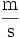
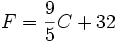

GBP
GBP
Some Articles
The SI System An article describing what the SI system of units is.
- Symbols are written in lower case, except for symbols derived from the name of a person. For example, the unit of pressure is named after Blaise Pascal, so its symbol is written "Pa" whereas the unit itself is written "pascal". The one exception is the litre, whose original abbreviation "l" is dangerously similar to "1". The NIST recommends that "L" be used instead, a usage which is common in the U.S., Canada and Australia, and has been accepted as an alternative by the CGPM. The cursive "l" is occasionally seen, especially in Japan, but this is not currently recommended by any standards body. For more information, see Litre.
- Symbols are written in singular form: i.e. "25 kg", not "25 kgs". Pluralization would be language dependent; "s" plurals (as in French and English) are particularly undesirable since "s" is the symbol of the second. Symbols do not have an appended period (.).
- It is preferable to write symbols in upright Roman type (m for metres, L for litres), so as to differentiate from the italic type used for mathematical variables (m for mass, l for length).
- A space should separate the number and the symbol, e.g. "2.21 kg", "7.3×102 m2", "22 °C". Exceptions are the symbols for plane angular degrees, minutes and seconds (°, ' and "), which are placed immediately after the number with no intervening space.
- Spaces should be used to group decimal digits in threes, e.g. 1 000 000 or 342 142 (in contrast to the commas or dots used in other systems, e.g. 1,000,000 or 1.000.000).
- The 10th resolution of CGPM in 2003 declared that "the symbol for the decimal marker shall be either the point on the line or the comma on the line". In practice, the full stop is used in English, and the comma in most other European languages.
- Symbols for derived units formed from multiple units by multiplication are joined with a space or centre dot (·), e.g. N m or N·m.
- Symbols formed by division of two units are joined with a solidus (/), or given as a negative exponent. For example, the "metre per second" can be written "m/s", "m s-1", "m·s-1." or . A solidus should not be used if the result is ambiguous, i.e. "kg·m-1·s-2" is preferable to "kg/m/s2".
- Several nations, notably the United States, typically use the spellings 'meter' and 'liter' instead of 'metre' and 'litre' in keeping with standard American English spelling. In addition, the official US spelling for the SI prefix 'deca' is 'deka'.
- The unit 'gram' is also sometimes spelled 'gramme' in English-speaking countries other than the United States, though that is an older spelling and use is declining.
Metric System An article describing the differences between the various metric systems.
- Conférence générale des poids et mesures (CGPM), an intergovernmental conference of official delegates of member nations and the supreme authority for all actions;
- Comité international des poids et mesures (CIPM), consisting of selected scientists and metrologists, which prepares and executes the decisions of the CGPM and is responsible for the supervision of the International Bureau of Weights and Measures;
- Bureau international des poids et mesures (BIPM), a permanent laboratory and world centre of scientific metrology, the activities of which include the establishment of the basic standards and scales of the principal physical quantities and maintenance of the international prototype standards.
The Meter An article defining the meter as used in the metric system, both past and present.
- exactly 1/0.9144 yards (approximately 1.0936 yards)
- exactly 1/0.3048 feet (approximately 3.2808 feet)
- exactly 10000/254 inches (approximately 39.370 inches)
1790 May 8 — The French National Assembly decides that the length of the new metre would be equal to the length of a pendulum with a half-period of one second
1791 March 30 — The French National Assembly accepts the proposal by the French Academy of Sciences that the new definition for the metre be equal to one ten-millionth of the length of the earth's meridian along a quadrant (one-fourth the polar circumference of the earth)
1795 — Provisional metre bar constructed of brass.
1799 December 10 — The French National Assembly specifies that the platinum metre bar, constructed on 23 June 1799 and deposited in the National Archives, as the final standards.
1889 September 28 — The first CGPM defines the length as the distance between two lines on a standard bar of an alloy of platinum with ten percent iridium, measured at the melting point of ice.
1927 October 6 — The seventh CGPM adjusts the definition of the length to be the distance, at 0 °C, between the axes of the two central lines marked on the prototype bar of platinum-iridium, this bar being subject to one standard atmosphere of pressure and supported on two cylinders of at least one centimetre diameter, symmetrically placed in the same horizontal plane at a distance of 571 millimetres from each other.
1960 October 20 — The eleventh CGPM defines the length to be equal to 1,650,763.73 wavelengths in vacuum of the radiation corresponding to the transition between the 2p10 and 5d5 quantum levels of the krypton-86 atom.
1983 October 21 — The seventeenth CGPM defines the length to be distance travelled by light in vacuum during a time interval of 1/299 792 458 of a second.
Traditional U.S. Units An article describing the traditional units of measurement used throughout the United States.
- 1 inch (in) = 25.4 mm
- 1 foot (ft) = 12 in = 30.48 cm
- 1 yard (yd) = 3 ft = 91.44 cm
- 1 mile (mi) = 5280 ft = 1760 yd = 1.609344 km
- 1 rod (unit) (rd) (also called pole or perch) = 16.5 ft = 5.0292 m
- 1 furlong (fur) = 40 rd = 660 ft = 201.168
- 1 mile (survey) = 8 fur = 5280 ft ≈ 1.609347 km
- 1 link (li) = 7.92 in = 0.66 ft = 0.001 fur (approx. 201.168 mm)
- 1 chain (ch) (Gunter's) = 100 li = 66 ft (approx. 20.1168 m)
- 1 fathom = 6 feet = 1.8288 m
- 1 cable length = 120 fathoms = 720 feet = 219.456 m (US Navy definition, there are others)
- 1 square foot (sq ft) = 144 sq in = 929.0304 cm²
- 1 square rod (sq rd) = 272.25 sq ft = 25.29285264 m²
- 1 acre = 10 sq ch = 1 fur × 1 ch = 160 sq rd = 43,560 sq ft = 4046.8564224 m²
- 1 square mile (sq mi) = 27,878,400 sq ft = 3,097,600 sq yd = 640 acres = 2.589988110336 km²
- 1 cubic inch (in³ or cu in) = 16.387064 ml (or cm³)
- 1 cubic foot (ft³ or cu ft) = 1728 cu in ≈ 28.317 L
- 1 cubic yard (yd³ or cu yd) = 27 cu ft ≈ 7.646 hL
- 1 acre-foot = 43,560 cu ft ≈ 325,851 gallons ≈ 12,334.818 m³
- 1 minim (min) = 1/480 fl oz ≈ 61.612 µL
- 1 fluid dram (fl dr) = 1/8 fl oz = 60 min ≈ 3.697 mL
- 1 fluid ounce (fl oz) = 1/128 gal = 8 fl dr ≈ 29.574 mL
- 1 gill (gi) = 7.21875 cu in = 4 fl oz ≈ 118.294 mL
- 1 cup = 2 gi = 8 fl oz ≈ 236.588 mL
- 1 pint (pt) = 2 cups = 4 gi = 16 fl oz ≈ 473.176 mL
- 1 fifth = 25.6 fl oz ≈ 757.082 mL
- 1 quart (qt) = 2 pt = 32 fl oz ≈ 946.353 mL
- 1 gallon (gal) = 231 cu in = 4 qt = 128 fl oz = 3.785411784 L
- 1 pint (pt) ≈ 550.610 mL
- 1 quart (qt) = 2 pt ≈ 1.101 L
- 1 gallon (gal) = 4 qt = 268.8025 in³ = 4.404 842 803 2 L
- 1 peck (pk) = 8 qt = 2 gal ≈ 8.81 L
- 1 bushel (bu) = 2150.42 cu in = 4 pk ≈ 35.239 L
- 1 grain (gr) = 64.79891 mg
- 1 dram (dr) = 27 11/32 gr = 1/16 oz ≈ 1.772 g
- 1 ounce (oz) = 16 dr = 437.5 gr ≈ 28.35 g
- 1 pound (lb) = 16 oz = 7000 gr = 453.59237 g
- 1 hundredweight (cwt) = 100 lb = 45.359 kg
- 1 ton (t) = 20 cwt = 2000 lb = 907.18474 kg ≈ 0.907 t
- 1 long hundredweight = 112 lb ≈ 50.802 kg
- 1 long ton = 20 long cwt = 2240 lb ≈ 1016.047 kg ≈ 1.016 t
- 1 scruple (s ap) = 20 gr ≈ 1.296 g
- 1 dram apothecaries (dr ap) = 3 s ap ≈ 3.888 g
- 1 ounce apothecaries (oz ap) = 1 oz t = 8 dr ap = 480 gr ≈ 31.103 g
- 1 pound apothecaries (lb ap) = 1 lb t = 12 oz ap = 5760 gr ≈ 373.242 g
- 1 pennyweight (dwt) = 24 gr ≈ 1.555 g
- 1 ounce troy (oz t) = 20 dwt = 480 gr ≈ 31.103 g
- 1 pound troy (lb t) = 12 oz t = 5760 gr ≈ 373.242 g
- 1 teaspoon = 1/3 tbsp = 1/6 fl oz ≈ 5 mL
- 1 tablespoon (tbsp) = 1/2 fl oz = 4 fl dr ≈ 15 mL
- 1 cup = 8 fl oz ≈ 240 mL
- 1 stick (of butter) = 1/4 lb = 4 oz ≈ 115 g
- 1 bushel (maize) = 56 lb ≈ 25.401 kg
- 1 bushel (wheat) = 60 lb ≈ 27.216 kg
- Pure water freezes at 32 °F and boils at 212 °F at 1 atm.
- Water saturated with common salt freezes at -6.02 °F.
- Conversion formula: 
SI
The International System of Units (abbreviated SI from the French phrase, Système International d'Unités) is the most widely used system of units. It is the most common system for everyday commerce in the world, and is almost universally used in the realm of science.
In 1960, the SI was developed from a subset of the existing Metre-Kilogram-Second systems of units (MKS), rather than the older Centimetre-Gram-Second system (CGS). Various new units were created at that time. The SI is not static, it is a living set of standards where units are created and definitions are modified with international agreement. The SI authority describes SI as the modern metric system where modern means post-1960. It is common for people to describe non-SI units as 'metric', although there is no authority that maintains a current definition of metric system other than SI.
With a few exceptions (such as draught beer sales in the United Kingdom) the system is legally being used in every country in the world and many countries do not maintain definitions of other units. In the United States the use of SI is increasing but is still limited. In the United Kingdom, conversion to metric units is official policy but not yet complete. Those countries that still give recognition to non-SI units (e.g. the US and UK) have defined many of the modern units in terms of SI units.
History
The metric system was officially adopted in France after the French Revolution. During the history of the metric system a number of variations have evolved and their use spread around the world replacing many traditional measurement systems.
By the end of World War II a number of different systems of measurement were still in use throughout the world. Some of these systems were metric system variations whilst others were based on the Imperial and American systems. It was recognised that additional steps were needed to promote a worldwide measurement system. As a result the 9th General Conference on Weights and Measures (CGPM), in 1948, asked the International Committee for Weights and Measures (CIPM) to conduct an international study of the measurement needs of the scientific, technical, and educational communities.
Based on the findings of this study, the 10th CGPM in 1954 decided that an international system should be derived from six base units to provide for the measurement of temperature and optical radiation in addition to mechanical and electromagnetic quantities. The six base units recommended were the metre, kilogram, second, ampere, Kelvin degree (later renamed the kelvin), and the candela. In 1960, the 11th CGPM named the system the International System of Units, abbreviated SI from the French name: Le Système International d'Unités. The seventh base unit, the mole, was added in 1970 by the 14th CGPM.
The International System is now either obligatory or permissible throughout the world. It is administered by the standards organisation: the Bureau International des Poids et Mesures (International Bureau of Weights and Measures).
Cultural issues
The swift worldwide adoption of the metric system as a tool of economy and everyday commerce was based mainly on the lack of customary systems in many countries to adequately describe some concepts, or as a result of an attempt to standardize the many regional variations in the customary system. International factors also affected the adoption of the metric system, as many countries increased their trade. Scientifically, it provides ease when dealing with very large and small quantities because it lines up so well with our decimal numeral system.
Cultural differences can be represented in the local everyday uses of metric units. For example, bread is sold in one-half, one or two kilogram sizes in many countries, but you buy them by multiples of one hundred grams in the former USSR. In some countries, the informal cup measurement has become 250 mL, and prices for items are sometimes given per 100 g rather than per kilogram. A profound cultural difference between physicists and engineers, especially radio engineers, existed prior to the adoption of the metre-kilogram-second (MKS) system and hence its descendent, SI. Engineers work with volts, amperes, ohms, farads, and coulombs, which are of great practical utility, while the centimetre-gram-second (CGS) units, which are fine for theoretical physics can be inconvenient for electrical engineering usage and are largely unfamiliar to householders using appliances rated in volts and watts.
Non-scientific people should not be put off by the fine-tuning that has happened to the metric base units over the past 200 years, as experts have tried frequently to refine the metric system to fit the best scientific research (e.g. CGS to MKS to SI system changes or the invention of the Kelvin scale). These changes do not affect the everyday use of metric units. The presence of these adjustments has been one reason advocates of the U.S. customary units had used against metrication; these customary units, however, are nowadays defined in terms of SI units, thus any difference in the definition of the SI units results in a difference of the definition of the customary units.
SI writing style
Spelling variations
Units
SI consists of seven base units and several derived units, together with a set of prefixes.
Base units
The following are the fundamental units from which all others are derived, they are dimensionally independent. The definitions stated below are widely accepted.
SI Base units
| Name | Symbol | Quantity | Definition |
|---|---|---|---|
| Kilogram | Kg | Mass | The unit of mass is equal to the mass of the international prototype kilogram (a platinum-iridium cylinder) kept at the Bureau International des Poids et Mesures (BIPM), Sèvres, Paris (1st CGPM (1889), CR 34-38). Note that the kilogram is the only base unit with a prefix; the gram is defined as a derived unit, equal to 1/1000 of a kilogram; prefixes such as mega are applied to the gram, not the kg; e.g. Gg, not Mkg. It is also the only unit still defined by a physical prototype instead of a measurable natural phenomenon (see the kilogram article for an alternate definition). |
| Second | s | Time | The unit of time is the duration of exactly 9 192 631 770 periods of the radiation corresponding to the transition between two hyperfine levels of the ground state of the caesium-133 atom at a temperature of 0 K (13th CGPM (1967-1968) Resolution 1, CR 103). |
| Metre | m | Length | The unit of length is equal to the length of the path traveled by light in a vacuum during the time interval of 1/299 792 458 of a second (17th CGPM (1983) Resolution 1, CR 97). |
| Ampere | A | Electrical current | The unit of electrical current is the constant current which, if maintained in two straight parallel conductors, of infinite length and negligible cross-section, placed 1 metre apart in a vacuum, would produce a force between these conductors equal to 2×10-7 newtons per metre of length (9th CGPM (1948) Resolution 7, CR 70). |
| Kelvin | K | Thermodynamic temperature | The unit of thermodynamic temperature (or absolute temperature) is the fraction 1/273.16 (exactly) of the thermodynamic temperature at the triple point of water (13th CGPM (1967) Resolution 4, CR 104). |
| Mole | mol | Amount of substance | The unit of amount of substance is the amount of substance which contains as many elementary entities as there are atoms in 0.012 kilograms of pure carbon-12 (14th CGPM (1971) Resolution 3, CR 78). (Elementary entities may be atoms, molecules, ions, electrons, or particles.) It is approximately equal to 6.02214199×1023 units (Avogadro's number). |
| Candela | cd | Luminous intensity | The unit of luminous intensity is the luminous intensity, in a given direction, of a source that emits monochromatic radiation of frequency 540×1012 hertz and that has a radiant intensity in that direction of 1/683 watt per steradian (16th CGPM (1979) Resolution 3, CR 100). |
Dimensionless derived units
The following SI units are actually dimensionless ratios, formed by dividing two identical SI units. They are therefore considered by the BIPM to be derived. Formally, their SI unit is simply the number 1, but they are given these special names, for use whenever the lack of a unit might be confusing.
SI dimensionless units
| Name | Symbol | Quantity | Definition |
|---|---|---|---|
| Radian | rad | Angle | The unit of angle is the angle subtended at the centre of a circle by an arc of the circumference equal in length to the radius of the circle. There are 2π radians in a circle. |
| Steradian | sr | Solid angle | The unit of solid angle is the solid angle subtended at the centre of a sphere of radius r by a portion of the surface of the sphere having an area r2. There are 4π steradians on a sphere. |
Derived units with special names
Base units can be put together to derive units of measurement for other quantities. Some have been given names.
SI derived units with special names
| Name | Symbol | Quantity | Expressed in base units |
|---|---|---|---|
| Hertz | Hz | Frequency | s-1 |
| Newton | N | Force | m·kg·s-2 |
| Joule | J | Energy | N.m = m2·kg·s-2 |
| Watt | W | Power | J/s = m2·kg·s-3 |
| Pascal | Pa | Pressure, Stress | N/m2= m-1·kg·s-2 |
| Lumen | lm | Luminous flux | cd·sr = m2·m-2·cd = cd |
| Lux | lx | Illuminance | lm/m2 = m2·m-4·cd = m-2·cd |
| Coulomb | C | Electric charge or flux | s·A |
| Volt | V | Electrical potential difference | W/A = J/C = m2·kg·s-3·A-1 |
| Ohm | Ω | Electric resistance | V/A = m2·kg·s-3·A-2 |
| Farad | F | Electric capacitance | C/V = m-2·kg-1·s4·A2 |
| Weber | Wb | Magnetic flux | m2·kg·s-2·A-1 |
| Tesla | T | Magnetic flux density | Wb/m2 = kg·s-2·A-1 |
| Henry | H | Inductance | Wb/A = m2·kg·s-2·A-2 |
| Siemens | S | Electric conductance | Ω-1 = m-2·kg-1.s3·A2 |
| Becquerel | Bq | Radioactivity (decays per unit time) | s-1 |
| Gray | Gy | Absorbed dose (of ionising radiation) | J/kg = m2·s-2 |
| Sievert | SV | Equivalent dose (of ionising radiation) | J/kg = m2·s-2 |
| Katal | kat | Catalytic activity | mol/s = s-1·mol |
| Degree Celsius | °C | Thermodynamic temperature | K(0°C = 273.15°K, 0°K = -273.15°C) |
| Molarity | M | Concentration | mol/L (mols of substance/liters of solution) |
Non-SI units accepted for use with SI
The following units are not SI units but are "accepted for use with the International System."
Non-SI units accepted for use with SI
| Name | Symbol | Quantity | Equivalent SI unit |
|---|---|---|---|
| Minute | min | Time | 1 min = 60 s |
| Hour | h | Time | 1 h = 60 min = 3600 s |
| Day | d | Time | 1 d = 24 h = 1440 min = 86400 s |
| Degree of arc | ° | Angle | 1 ° = (π/180) rad |
| Minute of arc | ' | Angle | 1 ' = (1/60) ° = (π/10800) rad |
| Second of arc | " | Angel | 1 " = (1/60) ' = (1/3600) ° = (π/648000) rad |
| Litre | l or L | Volume | 0.001 m3 |
| Tonne | t | Mass | 1 t = 103 kg |
Non-SI units not formally adopted by the CGPM |
|||
| Neper, Field quantitye | Np | Ratio (dimensionless) | LF = ln (F/F0) Np |
| Neper, Power quantity | Np | Ratio (dimensionless) | LP = 1/2.ln (P/P0) Np |
| Bel, Field quantity | B | Ratio (dimensionless) | LF = 2.log10 (F/F0) B |
| Bel, Power quantity | B | Ratio (dimensionless) | LP = log10 (P/P0) B |
Non-SI units with values obtained only by experiment |
|||
| Electronvolt | eV | Energy | 1 eV = 1.60217733 (49) × 10-19 J |
| Atomic mass unit | u | Mass | 1 u = 1.6605402 (10) × 10-27 kg |
| Astronomical unit | AU | Length | 1 AU = 1.49597870691 (30) × 1011 m |
Non-SI units whose use is not encouraged |
|||
| Nautical mile | Length | 1 nautical mile = 1852 m | |
| Knot | Speed | 1 knot = 1 nautical mile per hour = (1852/3600) m/s | |
| Are | a | Area | 1 a = 1 dam2 = 100 m2 |
| Hectare | ha | Area | 1 ha = 100 a = 10000 m2 |
| Bar | bar | Pressure | 1 bar = 105 Pa |
| A*ngström, angstrom | A* | Length | 1 A* = 0.1 nm = 10-10 m |
| Barn | b | Area | 1 b = 10-28 m2 |
SI prefixes
SI defines a number of SI prefixes to be used with the units: these combine with any unit name to give subdivisions and multiples. For example, the prefix kilo denotes a multiple of a thousand, so the kilometre is 1000 metres, the kilogram 1000 grams, and so on. The prefixes are never combined; a millionth of a kilogram is a milligram, and not a 'microkilogram'.
The following SI prefixes can be used to prefix any of the above units to produce a multiple or submultiple of the original unit. This includes the degree Celsius (e.g. "1.2 m°C"); however, to avoid confusion, prefixes are not used with the time-related unit symbols min (minute), h (hour), d (day). They are not recommended for use with the angle-related symbols ° (degree), ' (minute of arc), and " (second of arc), but for astronomical usage, they are sometimes used with seconds of arc.
SI prefixes
| 10n | Prefix | Symbol | Short scale | Long scale | Decimal equivalent |
|---|---|---|---|---|---|
| 1024 | yotta | Y | Septillion | Quadrillion | 1 000 000 000 000 000 000 000 000 |
| 1021 | zetta | Z | Sextillion | Trilliard (thousand trillion) | 1 000 000 000 000 000 000 000 |
| 1018 | exa | E | Quintillion | Trillion | 1 000 000 000 000 000 000 |
| 1015 | peta | P | Quadrillion | Billiard (thousand billion) | 1 000 000 000 000 000 |
| 1012 | tera | T | Trillion | Billion | 1 000 000 000 000 |
| 109 | giga | G | Billion | Milliard (thousand million) | 1 000 000 000 |
| 106 | mega | M | Million | 1 000 000 | |
| 103 | kilo | k | Thousand | 1 000 | |
| 102 | hecto | h | Hundred | 100 | |
| 101 | deca, deka | h | Ten | 10 | |
| 100 | none | none | One | 1 | |
| 10-1 | deci | d | Tenth | 0.1 | |
| 10-2 | centi | c | Hundredth | 0.01 | |
| 10-3 | mili | m | Thousandth | 0.001 | |
| 10-6 | micro | µ | Millionth | 0.000 001 | |
| 10-9 | nano | n | Billionth | Milliardth | 0.000 000 001 |
| 10-12 | pico | p | Trillionth | Billionth | 0.000 000 000 001 |
| 10-15 | femto | f | Quadrillionrth | Billiardth | 0.000 000 000 000 001 |
| 10-18 | atto | a | Quintillionth | Trillionth | 0.000 000 000 000 000 001 |
| 10-21 | zepto | z | Sextillionth | Trilliardth | 0.000 000 000 000 000 000 001 |
| 10-24 | yocto | y | Septillionth | Quadrillionth | 0.000 000 000 000 000 000 000 001 |
Obsolete metric prefixes
The following metric prefixes are no longer in use: myria-, myrio-, and any double prefixes such as those formerly used in micromicrofarads, hectokilometres, millimicrons.
This article is available under the terms of the GNU Free Documentation License. Original article can be found here.
Metric system
A metric system is a system of units for measurement developed in late 18th century France with decimal multipliers. In the early metric system there were two fundamental or base units, the metre and the kilogram, for length and mass. Other units were derived from these two fundamental units.
Multiples and submultiples of metric units are related by powers of ten; the names for these are formed with prefixes. This relationship is compatible with the decimal system of numbers and it contributes greatly to the convenience of metric units.
As the result of scientific progress, refinements, and different choices of base units, there have been a number attempts at creating metric systems. The modern (modern meaning post-1960) metric system is now widely used throughout the world and is called the International System of Units (SI).
History
Scientists, chiefly in France, had been advocating and discussing a decimal system of measurement based on natural units since at least 1640. It had some support by French monarchs. The first official adoption of such a system occured in France in 1791 after the French Revolution of 1789. The creators of this metric system tried to choose units that were logical and practical. The revolution gave an opportunity for drastic change with an official ideology of "pure reason". It was proposed as a considerable improvement over the inconsistent collection of customary units that existed before. The value of these units often depended on the region.
The adoption of the metric syste in France was slow, but its desirability as an international system was recognised by geodesists and others. Since then a number of variations on the system evolved. Their use spread throughout the world, first to the non-English-speaking countries, and more recently to the English speaking countries.
On the 20th of May 1875 an international treaty known as the Convention du Mètre (Metre Convention) was signed by 17 states. This treaty established the following organisations to conduct international activities relating to a uniform system for measurements:
Metric systems other than the 'modern metric system' (SI)
The original French system
The original French system somewhat continued the tradition of having separate base units for geometrically related dimensions, i.e. metre for lengths, are (100 m²) for areas, stere (1 m³) for volumes and dry capacities and litre (1 dm³) for liquid capacities. The base unit of mass was the gram it also included only few prefixes,
Several national variants existed thereof with aliases for some common subdivisions. In general this entailed in redefinition of other units in use, e.g. 500-gram pounds or 10-kilometre miles. An example of these is mesures usuelles (or metrified English unit though never officially adopted). However it’s debatable whether such systems are true metric systems.
Centimetre-gram-second systems
Early on in the history of the metric system various centimetre gram second system of units (CGS) had been in use. These units were particularly convenient in science and technology.
Metre-kilogram-second systems
Later metric systems were based on the metre, kilogram and second (MKS) to improve the value of the units for practical applications. MKSC, metre-kilogram-second-coulomb systems and MKSA, metre-kilogram-second-ampere systems are extentions of these.
The International System of Units (Système international d'unités or SI) is the current international standard metric system and the system most widely used around the world. It is based on the metre, kilogram, second, ampere, kelvin, candela and mole.
Metre-tonne-second systems
The metre-tonne-second system of units (MTS) was based on the metre, tonne and second. It was invented in France and mostly used in the Soviet Union from 1933 to 1955.
Gravitational systems
Gravitational systems use the kilogram-force as a base unit of force, with mass measured in a unit known as the hyl, TME, mug or metric slug.
Spelling variations
Several nations, notably the United States, typically use the spellings 'meter' and 'liter' instead of 'metre' and 'litre'. This is in keeping with standard American English spelling (for example, Americans also use 'center' rather than 'centre,' using the latter only rarely for its stylistic implications; see also American and British English differences). In addition, the official US spelling for the SI prefix 'deca' is 'deka'.
The US government has approved these spellings for official use. In scientific contexts only the symbols are used; since these are universally the same, the differences do not arise in practice in scientific use.
The unit 'gram' is also sometimes spelled 'gramme' in English-speaking countries other than the United States, though that is an older spelling and use is declining.
This article is available under the terms of the GNU Free Documentation License. Original article can be found here.
Metre
The metre [French spelling], or meter [English spelling] (symbol: m) is the SI base unit of length. It is defined as the length of the path travelled by light in absolute vacuum during a time interval of 1/299,792,458 of a second.
Adding SI prefixes to metre creates multiples and submultiples; for example kilometre (1000 metres; kilo- = 1000) and nanometre (one billionth of a metre; nano- = 1 / 1 000 000 000).
Conversions
1 metre is equivalent to:
History
The word itself is from the Greek metron (μετρον), "a measure" via the French mètre. Its first recorded usage in English is from 1797.
In the eighteenth century, there were two favoured approaches to the definition of the standard unit of length. One suggested defining the metre as the length of a pendulum with a half-period of one second. The other suggested defining the metre as one ten-millionth of the length of the earth's meridian along a quadrant (one-fourth the polar circumference of the earth). In 1791, the French Academy of Sciences selected the meridional definition over the pendular definition because of the slight variation of the force of gravity over the surface of the earth, which affects the period of a pendulum. In 1793, France adopted the metre, with this definition, as its official unit of length. Although it was later determined that the first prototype metre bar was short by a fifth of a millimetre due to miscalculation of the flattening of the earth, this length became the standard. So, the circumference of the Earth through the poles is approximately forty million metres.
In the 1870s and in light of modern precision, a series of international conferences were held to devise new metric standards. The Metre Convention (Convention du Mètre) of 1875 mandated the establishment of a permanent International Bureau of Weights and Measures (BIPM: Bureau International des Poids et Mesures) to be located in Sèvres, France. This new organisation would preserve the new prototype metre and kilogram when constructed, distribute national metric prototypes, and would maintain comparisons between them and non-metric measurement standards. This organisation created a new prototype bar in 1889 at the first General Conference on Weights and Measures (CGPM: Conférence Générale des Poids et Mesures), establishing the International Prototype Metre as the distance between two lines on a standard bar of an alloy of ninety percent platinum and ten percent iridium, measured at the melting point of ice.
International Prototype Metre standard bar made of platinum-iridium. This was the standard until 1960, when the new SI system used a krypton-spectrum measurement as the base. In 1983 the current metre was defined by a relationship to the speed of light in a vacuum.
In 1893, the standard metre was first measured with an interferometer by Albert A. Michelson, the inventor of the device and an advocate of using some particular wavelength of light as a standard of distance. By 1925, interferometry was in regular use at the BIPM. However, the International Prototype Metre remained the standard until 1960, when the eleventh CGPM defined the metre in the new SI system as equal to 1,650,763.73 wavelengths of the orange-red emission line in the electromagnetic spectrum of the krypton-86 atom in a vacuum. The original international prototype of the metre is still kept at the BIPM under the conditions specified in 1889.
To further reduce uncertainty, the seventeenth CGPM of 1983 replaced the definition of the metre with its current definition, thus fixing the length of the metre in terms of time and the speed of light:
The metre is the length of the path travelled by light in vacuum during a time interval of 1/299 792 458 of a second.
Note that this definition exactly fixes the speed of light in a vacuum at 299,792,458 metres per second. Definitions based on the physical properties of light are more precise and reproducible because the properties of light are considered to be universally constant
Timeline of definition
SI multiples
| Multiple | Name | Symbol | Multiple | Name | Symbol |
|---|---|---|---|---|---|
| 100 | metre | m | |||
| 101 | decametre | dam | 10–1 | decimetre | dm |
| 102 | hectometre | hm | 10–2 | centimetre | cm |
| 103 | kilometre | km | 10–3 | miliimetre | mm |
| 106 | megametre | Mm | 10–6 | micrometre | µm |
| 109 | gigametre | Gm | 10–9 | nanometre | nm |
| 1012 | terametre | Tm | 10–12 | picometre | pm |
| 1015 | petametre | Pm | 10–15 | femtometre | fm |
| 1018 | exametre | Em | 10–18 | attometre | am |
| 1021 | zettametre | Zm | 10–21 | zeptometre | zm |
| 1024 | yottametre | Ym | 10–24 | yoctometre | ym |
This article is available under the terms of the GNU Free Documentation License. Original article can be found here.
U.S. customary units
The U.S. customary units, commonly known in the United States as English units or standard units, are the non-SI (non-metric) units of measurement that are currently used in the U.S., in some cases alongside the International System of Units. This system of units is similar to, but not to be confused with, the Imperial system still used in the United Kingdom. Both systems derive from the evolution of local units over the centuries as a result of standardization efforts in England; the local units themselves mostly trace back to Roman and Anglo-Saxon units. Today, U.S. customary units are defined in terms of SI units.
The official policy of the United States government is to designate the metric system of measurement as the preferred system of weights and measures for U.S. trade and commerce. This process is known as metrication, and is evident in labeling requirements on food products, for example. However, for various reasons, customary units are still widely used on consumer products and in industrial manufacturing; only in specific scientific contexts are SI units always preferred. Since everyday weights and measures are mostly non-SI, children in U.S. public schools are generally taught customary units before SI, although many schools are now attempting to teach SI units at an earlier age.
In most Commonwealth countries, such as Australia and New Zealand, where metrication has been more forcefully imposed and has encountered less resistance from industry and consumer market forces, metrication is relatively complete, although some informal usage of non-SI units remains, particularly in Canada. Although increasingly metric, the UK has taken some time to change over, and retains use of non-SI units, particularly in informal situations. In more populated and developed British colonies, such as India, existing local weights and measures had been redefined based upon English units; some of which are still in limited use.
Other countries have had customary units of their own, sometimes very similar in root (Germanic, Roman), name and value to the ones listed below—foot or pound, for instance—but frequently, similar terms designate quite different sizes. For example, miles ranged from 1 to 10 kilometers. The standardization of these units was of varying quality, but was often comparable to or better than the U.S. customary system of the 19th century. Most were later redefined in terms of kilogram and meter. Often, unlike English units, they were rounded to "nice" SI values, leading to their use in colloquial speech, alongside SI terms, into the present day.
Historically, a wide range of non-SI units have been used in the United States. and United Kingdom, and in England before that, but many of these have fallen into disuse. This article only deals with the units commonly used or officially defined in the United States.
Units of length
The system for measuring length in the United States' customary system is based on the inch, foot, yard, and mile. However, for each of these units there exist two slightly different definitions, yielding two different systems of measure - international measure, and U.S. survey measure. The relationships between the different units within each measure is the same, but each measure has a slightly different definition in terms of metric units.
One inch international measure is exactly 25.4 millimeters, while one inch U.S. survey measure is defined so that 39.37 inches is exactly 1 meter. For most applications, the difference is insignificant (about 3 millimeter per mile). International measure is used for everyday use, engineering, and commerce in the United States, while survey measure is used only for surveying.
International measure uses the same definition of the units involved as is used in the UK and other Commonwealth countries. U.S. survey measure uses an older definition of these units which the United States used prior to adopting international measure.
Sometimes, for surveying purposes, units known as Gunther's Chain Measure (or equivalently Surveyor's Chain Measure) are used. These units are defined by survey feet as follows:
To measure depths at sea, fathoms are used:
Units of area
The units of area in the U.S. customary system are mostly based on the units of length squared, e.g., square inch (sq in, 645.16 mm²). Since the U.S. customary system has two differing definitions of the foot (international and survey), there are also two differing definitions for the square foot.
The Public Land Survey System, used to divide land in most of the United States, uses the survey mile to divide land into regular square parcels, such "sections" and "townships." However, these terms aren't used for general area measurement, instead used to indicate particular parcels of land in a rectangular grid.
Units of capacity and volume
The cubic inch, cubic foot and cubic yard are commonly used for measuring volume. In addition, there is one group of units for measuring volumes of liquids, and one for measuring volumes of dry material.
Other than the cubic foot, cubic inch and cubic yard, these units are differently sized from the units in the Imperial system, although the names of the units are similar. Also, while the U.S. has separate systems for measuring the volumes of liquids and dry material, the Imperial system has one set of units for both.
Technically speaking, since these units are defined in terms of the inch, it would make a difference whether international or survey measure was used. However, in practice, the difference between the two definitions would be imperceptible, and in any case in defining volumes international measure is used.
Volume in general
Liquid volume
The gill is basically a paper unit which is never actually used in the United States. Distilled liquor and wine were bottled in fifths until 1973; when the term "fifth" is used now it almost always means 750 mL.
Dry volume
Units of mass
There have historically been four different English systems of mass: Tower weight, Troy weight, avoirdupois weight, and apothecaries weight. Tower weight fell out of use (due to legal prohibition) centuries ago, and was never used in the United States. Troy weight is still used to weigh precious metals. Apothecaries weight, once used in pharmacy, has been largely replaced by metric measurements. Avoirdupois weight is the primary system of mass in the U.S. customary system.
The Avoirdupois units are legally defined as measures of mass, but the names of these units are sometimes applied to measures of force. For instance, in most contexts, the pound avoirdupois is used as a unit of mass, but in the realm of physics, the term "pound" can represent "pound-force" (a unit of force properly abbreviated as "lbf").
Troy weight, avoirdupois weight and apothecaries weight are all defined in terms of the same basic unit, the grain, which is the same in all three systems. However, while each system has some overlap in the names of their units of measure (all have ounces and pounds), the relationship between the grain and these other units within each system varies. For example, in apothecaries and troy weight, the pound and ounce are the same, but are different from the pound and ounce in avoirdupois, in terms of their relationships to grains and to each other. The systems also have different units between the grain and ounce (apothecaries has scruple and dram, troy has pennyweight, and avoirdupois has just dram). The dram was once known as the drachm.
To alleviate confusion, it is typical when publishing non-avoirdupois weights to mention the name of the system along with the unit. Precious metals, for example, are often weighed in "troy ounces", because just "ounce" would be more likely to be assumed to mean an ounce avoirdupois.
The pound avoirdupois, which forms the basis of the U.S. customary system of mass, is defined as exactly 453.59237 grams. All the other units of mass are defined in terms of it.
For the pound and smaller units, the U.S. customary system and the British Imperial system are identical. However, they differ when dealing with units larger than the pound. The definition of the pound avoirdupois in the British Imperial system is identical to that in the U.S. customary system.
Avoirdupois weight
The ton and hundredweight above are referred to as the short ton, and the short hundredweight, to distinguish them from the British Imperial ton and hundredweight, which are larger and hence are referred to as the long ton and long hundredweight. The long ton has limited use in the United States.
Apothecaries' weight
The grain has the same definition as for avoirdupois weight.
The pound and ounce apothecaries are identical to the pound and ounce troy.
Troy weight
The grain has the same definition as for Avoirdupois weight.
Cooking measures
The most common cooking weights and measures in the U.S. are as follows:
Grain measures
These are derived from the volume measures and there have been more for other crops.>/
Units of temperature
Traditionally, degrees Fahrenheit are used in the United States to measure temperatures.
This article is available under the terms of the GNU Free Documentation License. Original article can be found here.